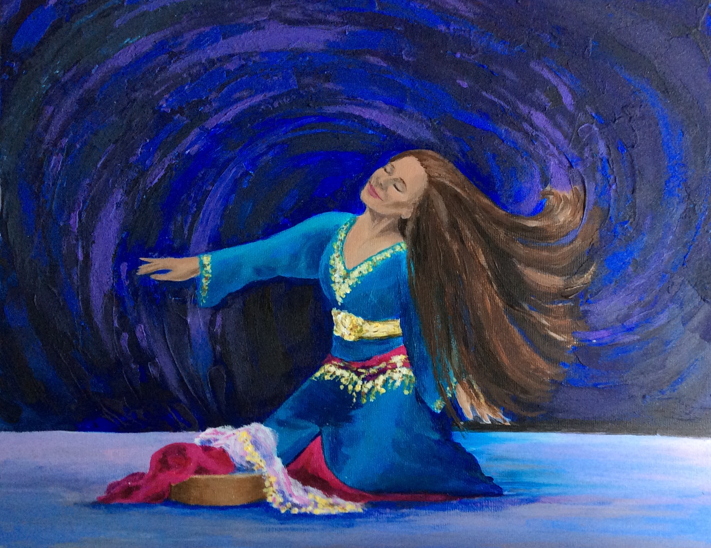
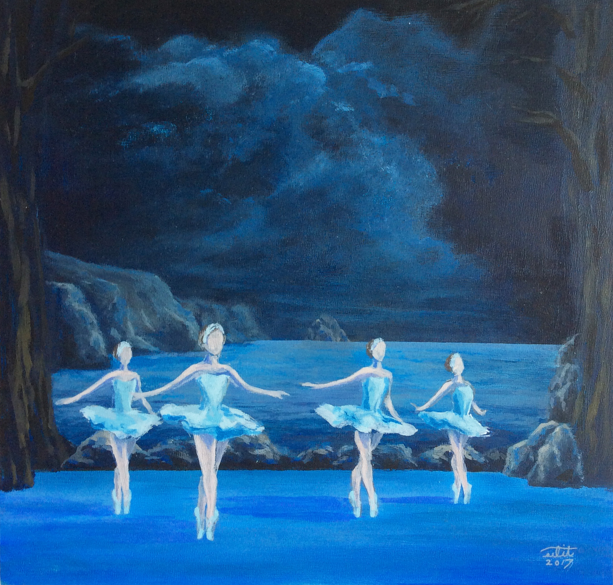
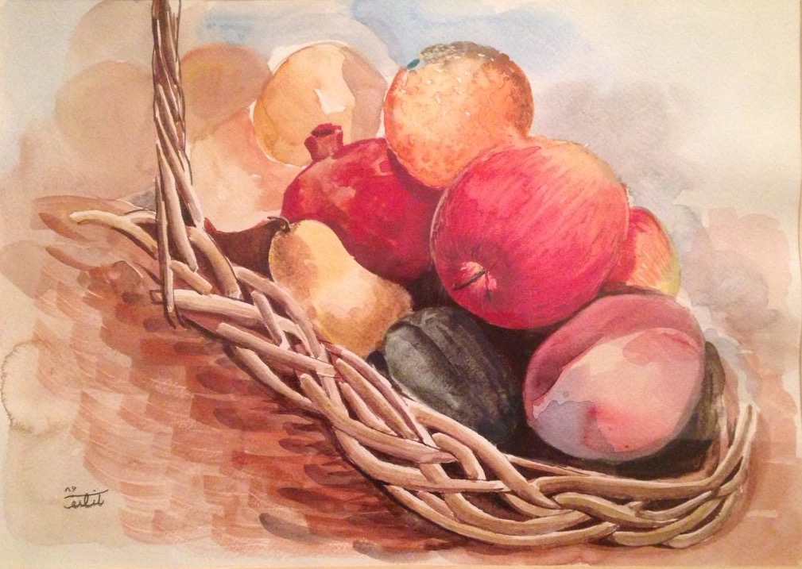
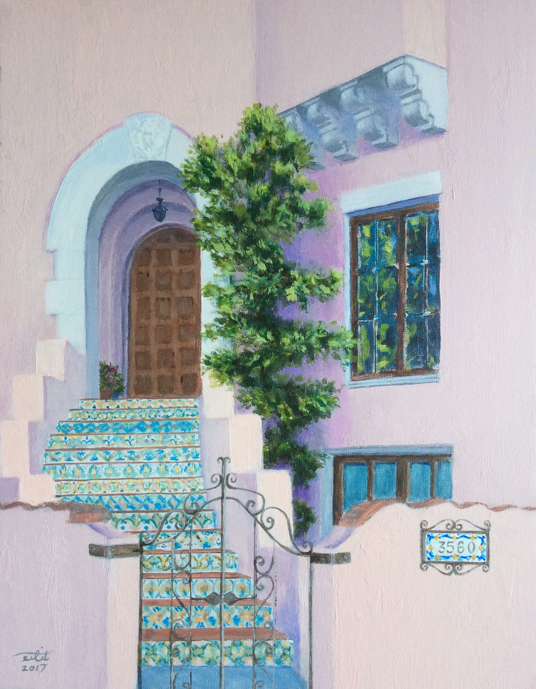
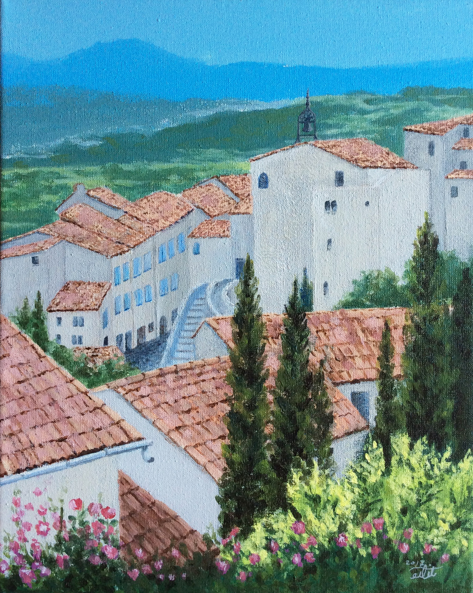
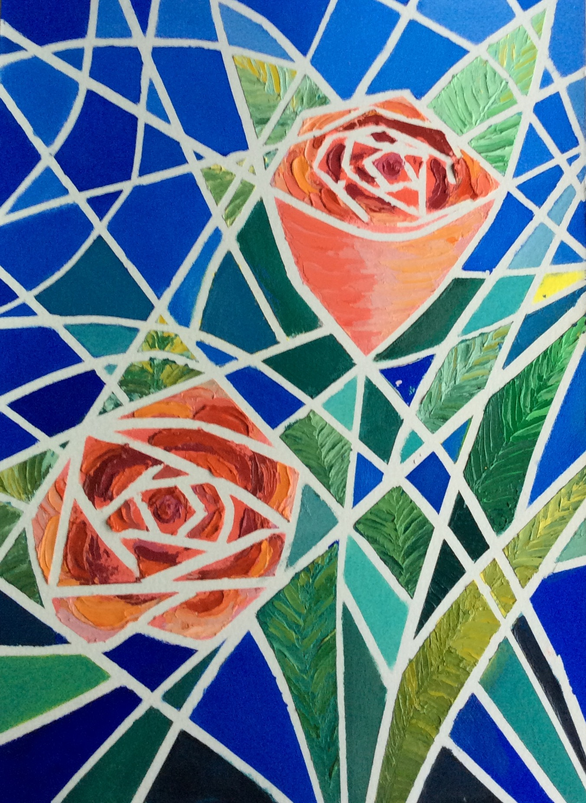

A reproduction of one of Monet's Nympheas paintings. Oil paint

A reproduction of Monet's Poppy Field. Oil paint

Suisse Mountains. The quality of the image is unfortunately low as it is a picture taken by camera from the framed work. Oil paint

Rocky mountains. Acrylic, 11 x 14 inches

Tennessee Valley Beach, California. Acrylic, 11 x 14 inches

Oil paint

This is my beautiful dancer/artsist friend Soumaya Marose. Acrylic, 11 x 14 inches

A scene from Swan Lake by the Kirov Ballet production. Acrylic, 11 x 11 inches

A reproduction of a still life by Cézanne. Acrylic

Water color

Doorway of a house in San Francisco, California. Acrylic, 11 x 14 inches

A village in Italy, after an old photography in a magazine. Acrylic, 9 x 11 inches

Doorway in Shahmirzad village in Iran. The quality of the image is unfortunately low as it is a picture taken by camera from the framed work. Oil paint

Acrylic

Oil paint